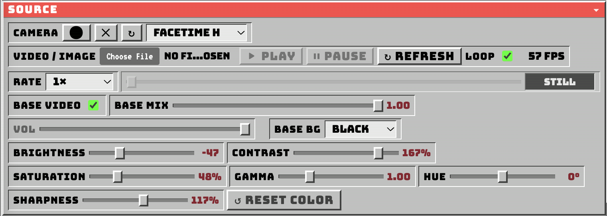

CAMERA
Start, stop, refresh, or choose the live camera. Camera availability depends on browser permission.
The Source section controls incoming video, live cameras, and still images. Color conditioning happens before the downstream HUFF processing stages. The screenshot, controls, and notes below describe the current October 2026 application baseline.
Select a numbered marker to jump to its explanation. On narrow displays, scroll the diagram horizontally to see all controls.

18 numbered callouts identify the interface controls. Image included locally in this package: assets/source-original.png.
Start, stop, refresh, or choose the live camera. Camera availability depends on browser permission.
Open video files or still images (JPG, PNG, WebP). The chosen media becomes the input for HUFF processing.
Start, stop, or reload the selected video. Some transport controls are unavailable for still images.
Repeat playback of the selected video when it reaches the end.
Displays the approximate render-loop frame rate next to LOOP; it is not the media file frame rate.
Change video playback speed from 0.25× to 4×. Does not change still-image playback.
Scrub a loaded video and read the current and total playback times.
Enable or disable the clean source contribution to the working composite.
Mix the clean source from 0 to 1 before subsequent processing.
Adjust the audio level of the loaded video. Still images have no audio.
Select the base background color: black, green, blue, or white.
Input brightness, −100 to +100; 0 is neutral.
Input contrast, 0–200%; 100% is neutral.
Input color saturation, 0–200%; 100% is neutral.
Midtone correction, 0.25–3.00; 1.00 is neutral. May require pixel processing.
Hue rotation, −180° to +180°; 0° is neutral.
Source detail control, 0–200%; below 100 softens and above 100 sharpens. 100% is neutral.
Restore all six color controls to their neutral values without resetting other effects.
Color conditioning changes what later effects receive. It does not replace the downstream Feedback, Vista, Sift, Luma, or Solarize stages.
| Control | Range | Neutral | Use |
|---|---|---|---|
| Brightness | −100 to +100 | 0 | Lighten/darken |
| Contrast | 0–200% | 100% | Tonal difference |
| Saturation | 0–200% | 100% | Color intensity |
| Gamma | 0.25–3 | 1.00 | Midtones |
| Hue | −180° to +180° | 0° | Color rotation |
| Sharpness | 0–200% | 100% | Softening / edge definition |
Load a video, use Play and Rate for transport, and adjust its source color before applying effects. LOOP repeats the clip.
Load JPG, PNG, or WebP. HUFF processes the image at native dimensions while downstream temporal effects can continue evolving. No audio or timeline is required.
RESET COLOR returns the six source adjustments to neutral. Presets store the six values. Other HUFF effect settings are not reset by this button.